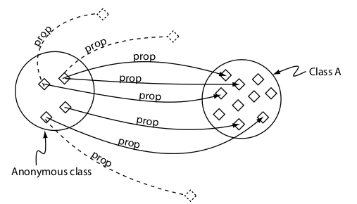
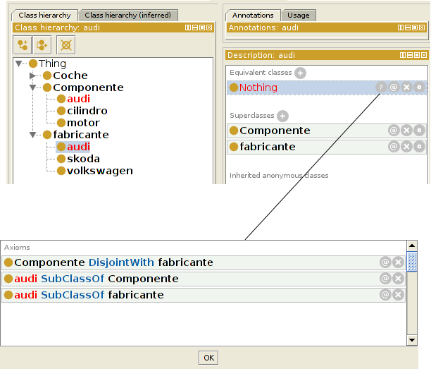

Building biomedical ontologies for a Life Sciences Semantic Web
3S Biology Summer School (Trento, 2014)
Mikel Egaña Aranguren
http://mikeleganaaranguren.com / mikel.egana@ehu.es
http://mikeleganaaranguren.wordpress.com/teaching/
http://mikel-egana-aranguren.github.io/3SBiologyTrento2014/
http://github.com/mikel-egana-aranguren/3SBiologyTrento2014

Life Sciences Semantic Web
Life Sciences Semantic Web

Semantic Web Stack

Ontologies and Semantic Web

Biomedical Ontologies

Functions
Schema fo Knowledge Base (e.g. ), vocabulary for publishing Linked Data, vocabulary for common database annotation (e.g. Gene Ontology), text mining, service description (e.g. SADI), data analysis, ...
Gene Ontology
Controlled vocabulary for describing molecular function, cellular component and biological process of gene products
Database integration through GAF files, data analysis (e.g. Term Enrichment), ...
Ontology engineering languages
OBO format ("DEPRECATED"!)
Web Ontology Language (OWL)
A W3C official standard for creating ontologies in a Semantic Web setting with computationally precise and formal semantics
OWL
OWL is based in Description Logics (DL), so automated reasoning can be used to infer "new" (*?!) knowledge
: "if a cow is a kind of animal and animal is a kind of organism, then cow is a kind of organism"OWL syntax
For computers: RDF/XML, OWL/XML, ...

For human beings: Manchester OWL Syntax, functional, ...
OWL semantics
An OWL ontology is comprissed of:
- Entities: the elements of the knowledge domain, identified with URIs, added by the ontology curator ("protein", "participates_in", ...)
- Axioms: they relate entities through the logical standard vocabulary offered by OWL, creating asssertions about the knwoledge domain "In order to be a protein and entity must participate in at least one metabolic process"
An ontology can import (owl:import) other ontology and refer to its entities through axioms
OWL entities
- Individuals
- Clases
- Properties
- Object
- Anotation
- Data
Individuals
Properties

Classes

OWL semantics
An OWL ontology that includes classes and individuals is a Knowledge Base:
- TBox (Terminological Box): classes (sort of "eschema" in DB)
- Abox (Assertional Box): individuals (sort of "data" in DB)
Classes

Class subclass (subsumption)

Equivalent classes

Class hierarchy (Taxonomy)

Necessary conditions

Necessary and sufficient conditions

Existential restriction (some)

Universal restriction(only)

Restriction to a individual (value)
Cardinaility constraintns

(+ QCR!) Manchester tutorial
More axioms for classes
disjointFrom
booleanos: not, or, and

Complex expressions

OWL properties

Object property features
Object property features
Object property features

Annotation properties
Natural language information that can be attached to entities (properties, individuals, classes), axioms, ontologies
No semantics
rdfs:label, rdfs:comment, dublin core, create new ones ...
Individuals
Member of on or more classes (Types)
SameAs or DifferentFrom other individuals
Binary relations with other individuals or data (triples), positive or negative
Automated reasoning
Un razonador infiere los "nuevos" axiomas que implican los axiomas que hemos introducido en la ontología
El razonador infiere todos los axiomas; es útil para tratar con conocimiento complejo
Open World Assumption (OWA)
(Falta de) Unique Name Assumption (¡owl:sameAs!)
Tareas más comunes razonamiento automático
Mantener taxonomía
Consistencia
Clasificar entidades y consultas
Mantener una taxonomía

Consistencia

Clasificar entidades, consultas
Clasificar entidades: dada una entidad nueva, como se relaciona con las demas entidades (types, equivalentTo, subClassOf, triples)
Una consulta es una clase anónima que clasificamos contra la ontología como si fuese una entidad
Ontology engineering tools
OWL API
http://owlapi.sourceforge.net/
http://github.com/owlcs/owlapi
Protege
TopBraid composer
Neon
Reasoners!?
Ontology engineering practices
Scope
Define a scope: domain (e.g. Cell Cycle), application (e.g. BioPAX), ...
Stick to it
Identifiers
Define a Semantic Web friendly URI scheme (Cool URIs for the Semantic Web, Linked Data URIs
, ... )Stick to it
Identifiers
Use common identifiers (e.g. identifiers.org)
Use alphanumeric identifiers in URIs and rdfs:label for common names
Use permament URLs (e.g. http://purl.oclc.org)
Interoperability
Commonly used Upper Level Ontology (e.g. BFO)
Or your own one, but be explicit
Commonly used properties (e.g. OBO Relations Ontology)
Or your own one, but be explicit
Interoperability
Reuse existing ontologies, extend them if needed ...
... and only then, and if completely necessary, create new classes
Link to other ontologies with owl:equivalentClass, rdf:type, rdf:subClassOf, ...
Automate
Ontology manipulation (create entities, add/remove axioms):
Releases: OORT (OWLtools)
Automate
Use a VCS as usual (e.g. GitHub), but be aware of perils of managing OWL in a VCS
Apply automated reasoning after every change
Document
Use annotation properties everywhere: rdfs:label, rdfs:comment, Dublin Core, your own ones
Modelling
The more explicit (axioms), the better. Reasoner always knows better than you
Follow Ontology Design Patterns (ODPs) and create/share your own ones: odps.sf.net,ontologydesignpatterns.org
Pitfalls: OntOlogy Pitfall Scanner (OOPS!), catalogue of ontology pitfalls
Community
OBO Foundry: Open, Common shared syntax, Unique identifier space, Versions, Delineated content, Definitions, OBO Relation Ontology, Well documented, Users, Collaboratively
An actual (not so good :P) example
BIOMO Protege RDF/XML